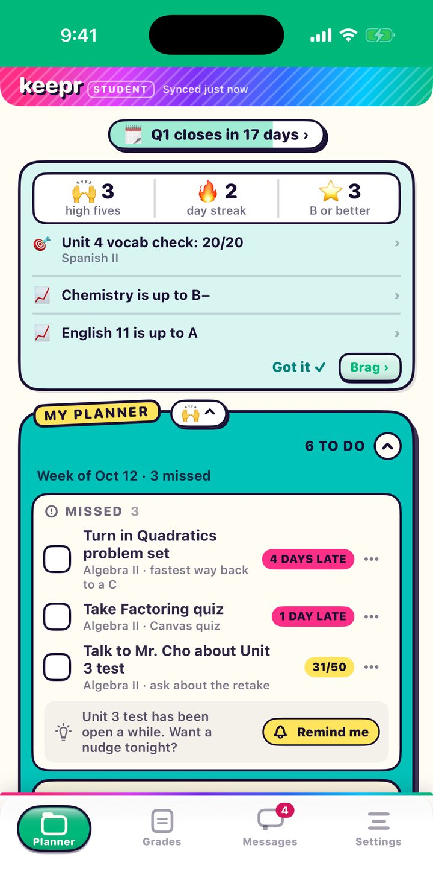
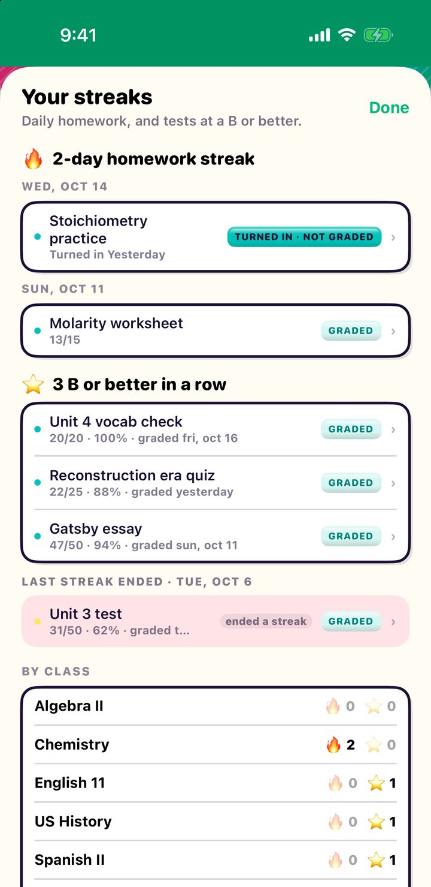
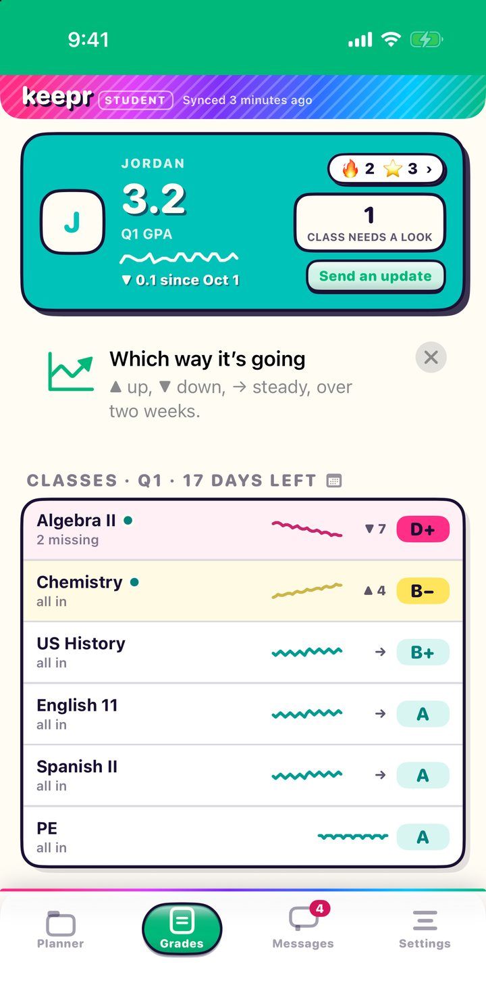
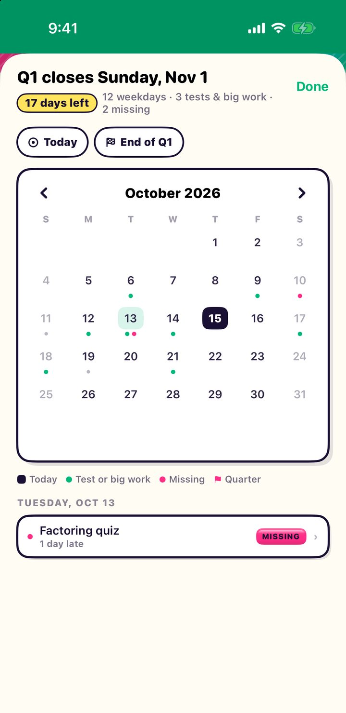

Your grades, minus the doom-scrolling.
Keepr turns Canvas into a planner that fills itself in. Check things off, keep your streak going, and answer your parents in one tap.

Why students like it
Catch it while it’s fixable.
-
A planner that fills itself in
What you missed, what’s due, and what’s coming, from every class.
-
Keep the streak going
Days in a row your homework got turned in, and your B-or-better run on tests.
-
Answer in one tap
Parents asking about a class? “On it” or “Turned in,” and you’re done.
Take a look
Know your next move.
The Planner shows what to do today. Your streaks show what you’ve already pulled off. Grades shows where it’s all heading.

Every day of the streak
Tap the fire or the star to see what kept it going, and what ended the last one.

Your report card, live
Your GPA and its trend, and every class on one line, with which way it’s heading.

The quarter, by day
“Q1 closes in 17 days” opens a calendar with your tests and missing work marked.
New in Keepr Student
Your planner, already filled in.
Home is now MY PLANNER, set out like a paper agenda. Keepr fills it in from Canvas. You just check things off.
MY PLANNER
Missed, Talk to a teacher, Today, the weekend, the next school day, and later this week. Tests show up as “Study for…” so you know what to prep.
Check it off
Done, turned in on paper, excused, or talked to your teacher. It stays crossed off today, then goes away tomorrow.
High Fives and streaks
A scoreboard of your high fives, your homework streak, and your B-or-better run. Tap Brag to send it home.
A Grades tab
Your GPA, a report-card table of every class, tests and big work in the next two weeks, and what came back graded.
Quarter calendar
“Q1 closes in 17 days” is always there. Tap it for the whole quarter, with tests and missing work marked by day.
Clear out old missed work
Two or more old missed things? Sort them all out at once with one answer, instead of one at a time.
What’s inside
Everything in the binder.
Talk to a teacher
Plan to ask a teacher about something, and Keepr asks a few days later whether you did.
Taking the zero
Not turning something in? Say so. If you share with family, a parent gets to OK it first.
One-tap answers
“On it,” “Turned in,” “Help,” or “Talk tonight.” And if you turn it in after they asked, Canvas backs you up with the date.
Write it for me
Apple Intelligence drafts a reply that sounds like you, not a formal letter. It runs on your iPhone.
Planner widget
Missed work in one line you can tap, then all of today, then what’s next, right on your Home Screen.
Short heads-ups
A before-school note and an end-of-day one, in planner words. Not a ping for every message.
Getting set up
Three steps. No homework.
Connect Canvas
Keepr walks you through making a Canvas access token, right inside the app. No password to hand over.
Keepr fills in your planner
Every class, grade, and assignment, sorted by the day it’s due.
Join your family
If a parent uses Keepr Parent, they can invite you. Then you can answer them right in Keepr.
Just want to peek?
Tap “Explore with sample data” on the first screen to explore Keepr Student as a pretend student. No Canvas account needed.
Read-only
Keepr reads grades from Canvas. It never changes a thing.
No passwords
Keepr never sees your Canvas password.
You know what they see
Your parents see grades through their own Canvas. If you share with family, they also see your messages and what you check off. Settings shows exactly what they can see.